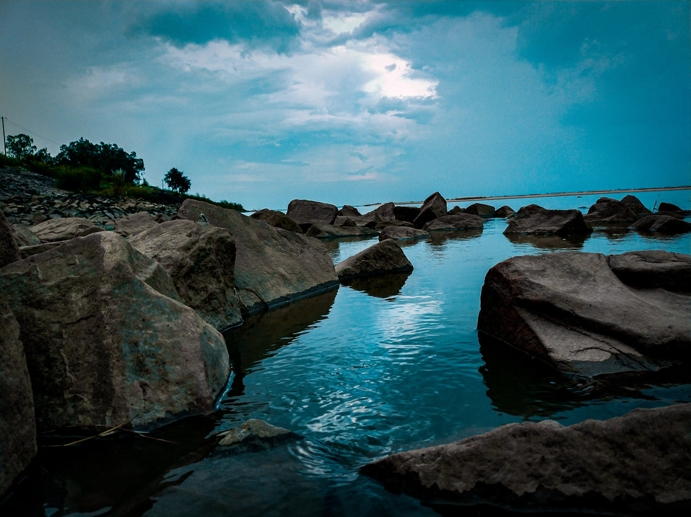
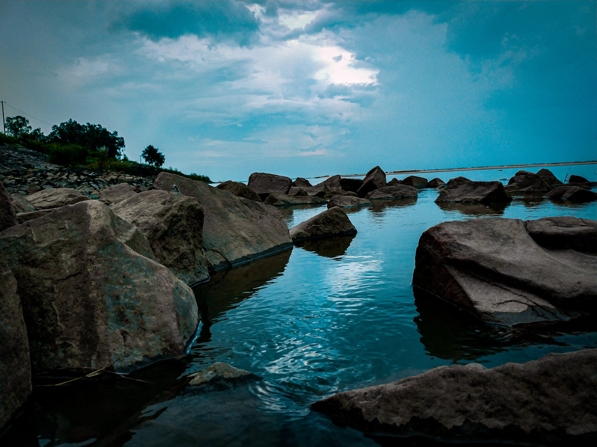
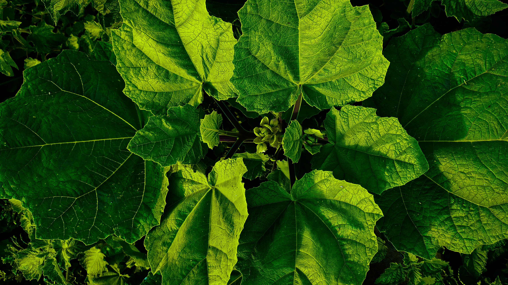

|  | Sone RiverDehri, a bustling industrial town in Bihar, India, finds its heart beating alongside the mighty Sone River. The Sone, stretching 784 kilometers, is one of the longest rivers in India and a vital source of life for the region. |
|  | Sone RiverDehri, a bustling industrial town in Bihar, India, finds its heart beating alongside the mighty Sone River. The Sone, stretching 784 kilometers, is one of the longest rivers in India and a vital source of life for the region. |
|  | FarmingDehri on Sone's proximity to the Sone River and its fertile plains offer potential for various agricultural pursuits. Here's a breakdown of some possibilities: |